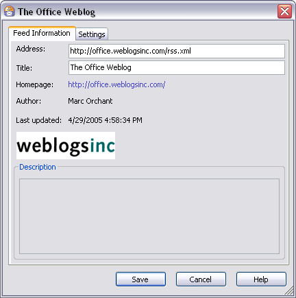

Feed Properties Dialog
You can access this dialog from the context menu of a RSS/Atom feed in the Feeds Pane or select a feed in the Feeds pane and from the Edit menu, select Properties.
This dialog enables you to view all the properties of a feed to which you are subscribed, and to modify some of them.
Dialog Components
Feed Information Tab
Address
The web address (URL) of the feed’s XML data file. You can edit the address, but the only reason to do so would be if the URL of the feed changed.
Title
This is the title that appears in the Feeds Pane and links to the feed. When you subscribe to the feed, the value of Title defaults to the value contained in the feed’s XML data file. You can optionally change the title to something else.
HomePage
This is a link to the home page of the web site that hosts the feed. The URL is taken from the data supplied by the feed publisher in the feed’s XML data file.
Author
This is link to the feed publisher’s e-mail address. The link is present only if the publisher provides one in the feed’s XML data file. (It is not a required data element for RSS feeds).
Last Updated
This read-only field shows the date/time when the selected feed was last updated (i.e., downloaded) by Omea ReaderOmea Pro.
Settings Tab
The Feed Requires an HTTP Login (checkbox)
If the feed requires you to log in, and you either you have never logged in before, or you have logged in using Internet Explorer and the browser is not set to remember your login information, then check this option and supply the user name and password.
User name
The user name for the HTTP login. This field is disabled unless This feed requires an HTTP login is checked.
Password
The password for the HTTP login. This field is disabled unless This feed requires an HTTP login is checked. The password is stored in an encrypted form.
Description
A short synopsis or description (read-only) of the selected feed provided by the feed publisher in the feed's XML data file.
Update Controls of Settings Tab
Update every (checkbox)
Check this box if you want the feed to be updated automatically at some interval. If not checked, you will have to refresh the feed manually.
number box
Specifies the number of time units for feed updating. Type a number or use the increment/decrement buttons. This control is disabled unless Update every is checked.
time unit
Specifies the time unit used for auto-updating the feed. Time units available in the list are: minutes, hours, days, and weeks. This control is disabled unless Update every is checked.
Destination Folder for Downloaded Feed Enclosures
This is the directory where Omea keeps the downloaded feed enclosures (feed posts “attachments”). You can change the default destination folder for each feed so that the feed enclosures will be downloaded to the specified folder. The default destination folder is set in the Feed Options dialog. To change the destination folder for downloaded enclosures, click Browse button and navigate to the desired folder where you want Omea to keep the enclosures or create a new folder.
Mark All Items Read When Leaving the Feed
This option will help to ease your work with feeds. Check this box if you want Omea to change the status of the feed posts to Read once you switch from this feed to some other feed in Feeds pane.
Go to the Item Link When an Item is Selected
This option will allow you to open the feed posts in a Preview pane of the Feeds Items List as if you read these posts in a web browser. So you can see the complete web page representing the feed post as if you navigate to it using your favorite web browser but you don't have to leave Omea.
Save
Applies any changes you may have made to editable controls and closes the dialog.
Cancel
Abandons any changes you may have made to editable controls and closes the dialog.
Help
A jumper to this dialog features description in Omea ReaderOmea Pro Help.
See also: